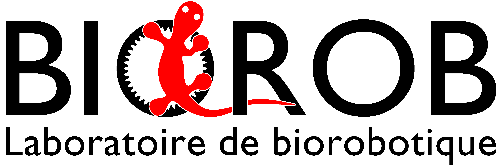
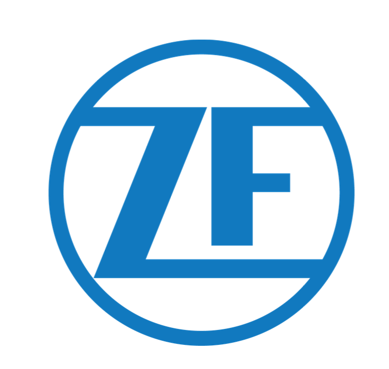
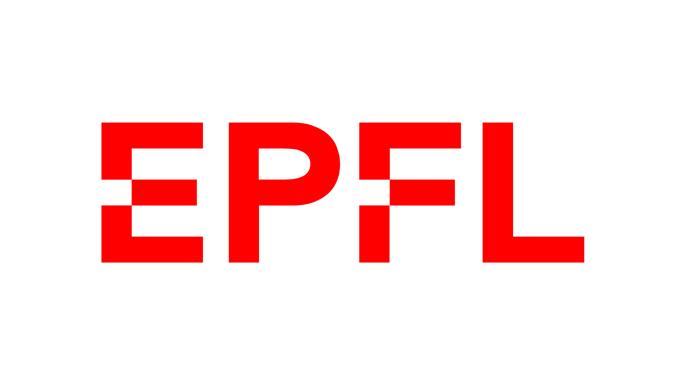
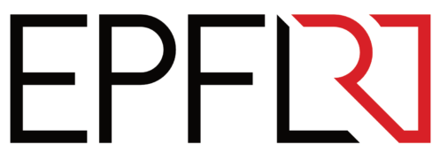

Curriculum Vitae
-
Mar 2026 – Sept 2026
R&D Engineering Intern
AIRARO SAS · Master Thesis
Built a sizing tool from live SWAC plant data, combining thermal, hydraulic and economic modelling. Identified design changes improving COP by 25%.
-
Sept 2025 – Feb 2026
R&D Engineering Intern
ODEWA · French Polynesia
Owned the full lifecycle of an automated underwater waste-extraction machine: specs, CAD, FEA, fabrication and field validation. 1 tonne extracted in 2 days on site.
-

Feb 2025 – Jul 2025
Compliant Biomimetic Feet
BioRob Lab, EPFL
Designed and bench-tested compliant feet for a salamander robot; integrated and validated with motion capture, achieving +15% locomotion efficiency.
-
Sept 2024 – Feb 2025
3-DOF Robotic Platform
Reconfigurable Robotics Lab, EPFL
Redesigned the platform structure to carry a human; built a real-time video-to-motion pipeline to drive it.
-

Sept 2023 – Mar 2024
Energy Storage Optimization
Collaboration with ZF Group
Reduced-scale physical demonstrator with Arduino-integrated hardware for a battery-swap station, plus a business model study.
-

2023 – 2026
Master in Mechanical Engineering
EPFL · Design & Production, minor in Management & Technology of Entrepreneurship
-

Feb 2022 – Aug 2023
In-Wheel Electric Propulsion
EPFL Racing Team · Formula Student
Designed and optimised an in-wheel gearbox under tight thermal, mass and regulatory constraints, from concept to a raced vehicle.
-
2019 – 2023
Bachelor in Mechanical Engineering
EPFL
Languages: French (native, C2), English (fluent, C2)
A Functional Extraction Machine in 6 Months
Designed, built and field-tested an automated waste-extraction machine deployed on a pearl farm in French Polynesia. Sole engineer from first specifications through CAD, structural sizing, fabrication and in-situ validation, in six months. Field data from the first prototype is now driving a second-generation design.
A SWAC Sizing Tool Built from Live Plant Data
Analyzed live operating data from a SWAC (Sea Water Air Conditioning) cooling plant and built a thermal, hydraulic and economic sizing tool to guide future plant design, now part of the company's business plan.
Compliant Feet for a Salamander Robot
Designed and bench-tested compliant feet for a salamander-like robot, then integrated and validated them on the platform with motion capture.
Redesigning a 3-DOF Motion Platform to Carry a Human
Reworked the structure of a 3-DOF motion platform to safely carry a person, and built a real-time pipeline that extracts locomotion from video to drive it.
Hardware Integration for a Battery Swap Station Optimiser
Built a reduced-scale physical demonstrator of a battery-swap station, turning an optimisation model's decisions into live hardware behaviour.
In-Wheel Motor & Gearbox for a Formula Student Car
Designed the gearbox and led integration of an in-wheel propulsion system for a Formula Student car, from concept through to the raced vehicle.
A Simple, Effective Gripper for a Robotic Arm
Built a gripper that sets grip force mechanically instead of through active control, with a sensor to weigh what it holds.
Autonomous Hull Cleaning Robot
Concept study for an autonomous hull-cleaning robot, from user needs through architecture selection to detailed design.
Get in touch